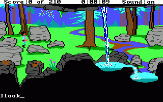

The graphics were rather blocky, using a 160x200 resolution, which I believe is because of the graphics mode used by the IBM PCjr, for which the interpreter was originally written. AGI used the internal speaker for sound on PCs, but on pretty much every other system (Mac, Amiga, Tandy, PCjr) it was capable of doing 3 voices.

A screenshot from Kings Quest 3
Since late 1996 a number of people around the world have been working together to figure out the data formats used by AGI, with the intention of being able to view and edit the data. It has taken a while, but we are now at the point where we can do this, and even create our own adventure games using the system.